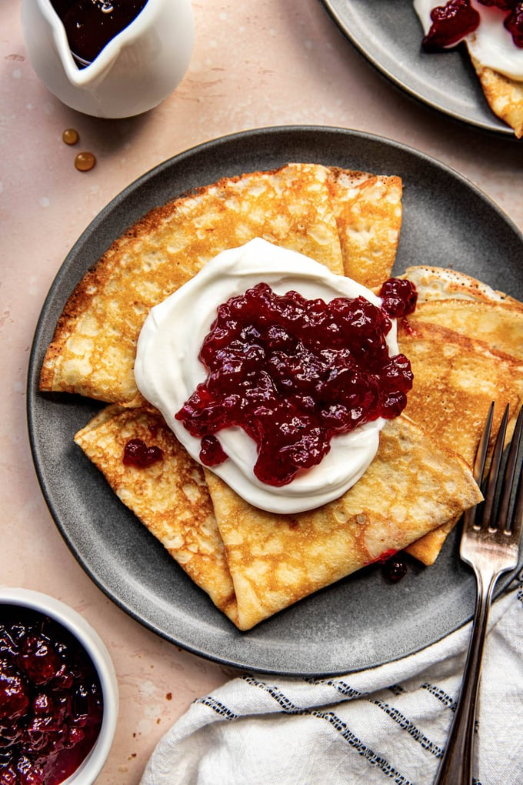

Pannakakor

Swedish Pancakes with Lingonberries.
Ingredients
- 3 eggs
- 1 1/2 cups whole milk
- 1 cup flour
- 3 tablespoons melted butter
- 1 tablespoon sugar
- 1/2 teaspoon salt
- lingonberry jam
- whipped cream
Steps
- Blend eggs and milk for 30 seconds. Add flour, melted butter, sugar, and salt. Mix for 15-20 seconds until combined.
- Preheat nonstick pan over medium heat. Pour 1/4 cup of pancake batter into the pan and immediately tilt pan to spread batter around the pan.
- Cook each pancake for 1 minute or until golden brown. Flip with a spatula and cook for another 15-30 seconds.
- Serve pancakes folded or rolled and top with cream and jam.
Recipe from https://pinchofyum.com/swedish-pancakes